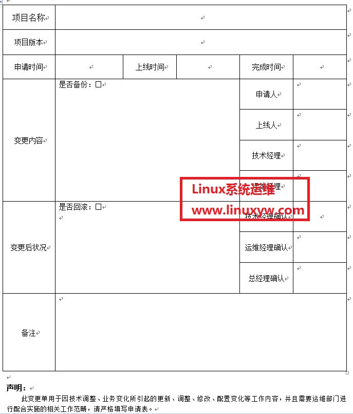

中小企业代码上线流程规范（linux运维）
请严格按申请单内容进行填写
顶目名称：顶目名称，如 Linux运维
项目版本：版本号
申请时间：需在工作日13点前作出申请
上线时间：由运维经理指定上线时间（一般是工作日下午17点左右，紧急情况例外）
完成时间：代码上线所有操作完成时间（代码上线、回滚，确认）
变更内容：需申请人对此处上线引起的结构、内容等变化，详细记录
申请人：填写申请代码上线人的姓名
上线人：填写服务器操作人的姓名（由运维经理指定）
技术经理：技术经理亲笔签名
运维经理：运维经理亲笔签名
变更后状况：填写代码上线后的状况（如是否正确，是否引起BUG等），需申请人详细填写
技术经理确认：技术经理亲笔签名
运维经理确认：运维经理亲笔签名
总经理确认：总经理亲笔签名
其它备注：
申请人填写（项目名称、版本号、申请时间、变更内容，申请人）此单后，交给技术经理审批，技术经理审批通过则在技术经理处签上自己名字，再转交给运维经 理，运维经理确认技术经理签名后，指定一个运维人员作为上线人协助此次代码上线的操作和指定代码上线时间，并在运维经理处亲笔签名，最后此单转交给申请 人。
当代码上线后，需测试一段时间， 如果一切正常，申请人在变更后状况处填写一切正常；如果引起BUG等问题，则需详细记录这些问题（如果代码回滚，需在是否回滚处打勾）。最后此单再交给技术经理、运维经理、总经理确认并签名，然后此单放公司存档。
运维经理需看到技术经理亲笔签名后，才可受理此单
二：运维人员上线操作流程：
1：在上线前，需对程序文件和数据库文件进行备份（备份名字需带上当前时间，如linuxyw20130621.tar.gz），如果遇到严重BUG，立即进行代码回滚操作。
2：使用SVN进行代码上线。代码上线后，会在test目录，由IP：port进行测试，测试没有问题后，上线人员再把更新的内容推到正式目录中，并在正式环境中进行检测
附：代码上线需经过以下流程：
A：程序在办工室本地环境测试，由开发部门进行内测
有问题：继续修改
B：内测正确后，申请上线，填写《XXXX运营系统变更、上线申请单》
C：运维部门协助开发部门使用SVN进行代码上线，然后进行IDC环境测试，由开发部，运维部，编辑部负责测试。测试环境通过IP：port访问。
有问题：返回继续修改
D：IDC环境测试通过，则由运维上线人员把更新程序推送到正式目录中，由开发部，运维部，编辑部负责最后测试，无问题，代码上线结束，申请人完善《XXXX运营系统变更、上线申请单》并提交。
有问题：代码回滚；返回继续修改
